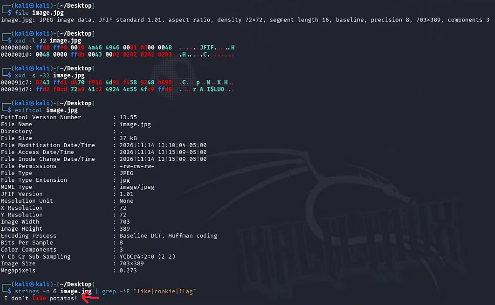
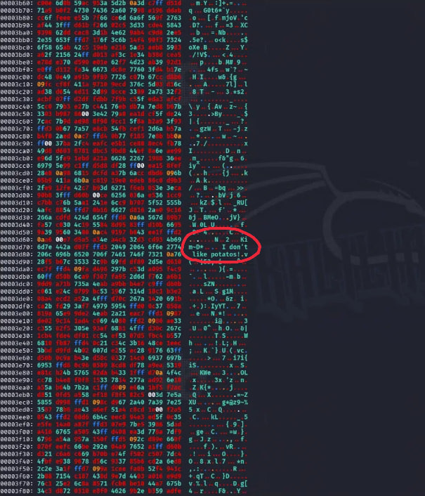

Стеганография в JPEG: do_you_like_cookes.jpg
Этот разбор посвящен классической задаче на стеганографию в изображениях формата JPEG. Нам дан файл do_you_like_cookes.jpg, и наша цель — найти в нём скрытое сообщение или флаг.
1. Первичный анализ (Быстрые команды)
Первым делом нужно понять, с чем мы работаем, и проверить самые очевидные места. Начнем с проверки типа файла и его «хвоста».
# Убеждаемся, что это действительно JPEG
file image.jpg
# Смотрим конец файла. Если видим ff d9 (End of Image) — значит, после картинки ничего не дописано
xxd -s -32 image.jpgФайл заканчивается на ff d9. Это значит, что никаких ZIP-архивов или текста после картинки нет. Данные спрятаны внутри самого файла.
2. Проверка метаданных и открытого текста
Следующий шаг — проверить EXIF-данные (комментарии, геолокацию и т.д.) и поискать обычные строки. Для этого используем exiftool и strings.
exiftool image.jpg
strings -n 6 image.jpg | grep -iE "like|cookie|flag"Результат в консоли:
I don't like potatos!Флаг (или скрытое сообщение) найдено. Оно лежит прямо в бинарном потоке файла.

3. Понимание техники (Что произошло?)
Почему strings сработал? Обычно JPEG-файл после маркера FF DA (Start of Scan) выглядит как сплошной бинарный мусор. Однако здесь байты флага были вручную вписаны в сжатый поток между RST-маркерами (маркерами синхронизации FF D0–D7).
Если открыть файл через ImageMagick (convert), он начнет ругаться на extraneous bytes before marker 0xdX. Это верный признак ручной вставки данных.
4. Ручной поиск в Hex-редакторе
Если бы мы не знали, что искать, или strings не сработал, флаг можно найти глазами. Открываем файл в hex-редакторе (например, xxd image.jpg | less или HxD на Windows).
Скроллим файл и смотрим на правую колонку (ASCII). Прямо посреди «кракозябр» (в районе смещения 0x3d76) взгляд зацепится за четкую английскую фразу:
00003d90: 33b3 2ed1 4a34 9798 3191 de74 249d 705b 3...J4..1..t$.p[
00003da0: 646f 6e27 7420 6c69 6b65 2070 6f74 6174 don't like potat
00003db0: 6f73 210a 7628 f5b6 7c35 332c 9b69 fddf os!.v(..|53,.i..Выделяем байты 64 6f 6e 27 74 и копируем. Получаем I don't like potatos!

5. Итог
Флаг: ████████████████████ (I don't like potatos!)
Задача отлично демонстрирует, что не всегда нужны сложные скрипты. Иногда достаточно знать, как работает структура файла, и уметь пользоваться базовыми утилитами.